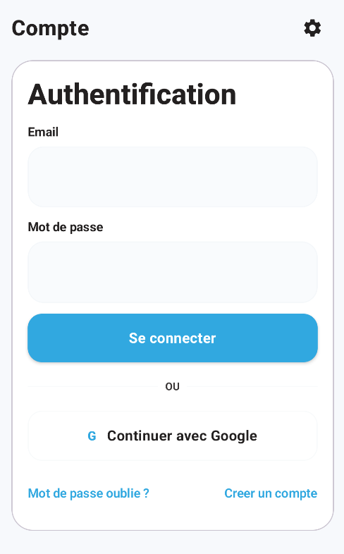
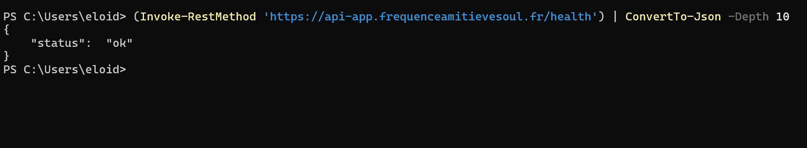

Stage BUT2 · étude de cas
Application mobile Fréquence Amitié Vesoul
Création de zéro de l'application Android de la radio : direct, podcasts, recherche, compte et notifications, reliée à une API PHP que j'ai déployée sur OVH.
- Durée
- 8 semaines
- Période
- Avril – juin 2026
- Rôle
- Développeur de l'application mobile
- Plateforme
- Android + API PHP
01Contexte
Fréquence Amitié Vesoul est une radio associative. Elle voulait un point d'accès mobile simple vers son direct et ses émissions. J'ai travaillé en binôme avec un autre stagiaire, chargé du nouveau site web : nos deux supports partagent le même backend.
02Le besoin
Écouter le direct en un geste, retrouver les podcasts et les replays, chercher un contenu, gérer son compte et recevoir les actualités de la radio.
03Architecture
- App AndroidKotlin · Jetpack Compose
- API PHPOVH · api-app.frequenceamitievesoul.fr
- MySQLcontenus, comptes, écoutes
S'y ajoutent Firebase Cloud Messaging pour les notifications et le flux audio du direct.
04Ce que j'ai construit
- Navigation à 5 onglets (Accueil, Podcasts, Direct, Recherche, Compte), avec des écrans de détail (programme, émission, épisode, article) et des liens profonds.
- Lecture audio en arrière-plan (service Media3/ExoPlayer) avec un lecteur persistant, la pochette du titre en cours, les paroles et un égaliseur.
- Podcasts : catalogue, téléchargement, historique, commentaires et likes.
- Authentification hybride (compte local + serveur, connexion Google), avec le jeton stocké chiffré.
- Notifications push Firebase, qui ouvrent l'application ou une page précise.
- API REST PHP + MySQL (articles, bannières, podcasts, grille des programmes, suivi d'écoute), avec un endpoint
/healthpour la mise en production.



05Démarche
Cadrage la semaine 1 (recueil des besoins auprès de l'équipe), maquettes, puis développement par blocs fonctionnels et validation sur mobile à chaque étape. J'ai aussi rédigé un guide de transition pour une future version iOS (SwiftUI).
06Bilan
Ma plus grosse progression porte sur l'architecture d'une vraie application (environ 85 fichiers Kotlin organisés par domaine) et sur la mise en production d'un backend. Ce qui m'a le plus appris : relier le mobile à un système complet (contenus, API, hébergement) au lieu de le penser isolé.